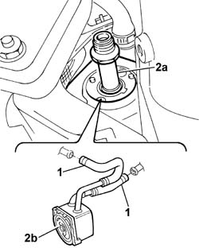

1084C10 Engine oil heat exchanger - R.R.
- Path
- Procedures > 10 ENGINE > 1084 ENGINE LUBRICATION > 1084C ENGINE OIL COOLING CIRCUIT > 1084C10 Engine oil heat exchanger - R.R.
- Kind
- repair procedure (removal / refitting; the operation number is the code)
- Applies to
- engines: 2.4 JTD 10V; all production periods
- Interactive page
- https://sloeber94.github.io/elrnDB-lThss/en/#/76148
Applies to: all engines; all production periods
 Removing
Removing
 Refitting
Refitting- Position the vehicle on a lift.
See in Op. 7055B54 PROTECTION/GUARD under engine - R.R.
See in Op. 1084B30
- Disconnect the lower radiator hose and drain the engine coolant.
1. Loosen the bands and disconnect the engine coolant inlet and outlet pipes from the engine oil heat exchanger.
2. Undo the centre pin (2a) and remove the engine oil heat exchanger (2b).

Applies to: all engines; all production periods
Refitting
Removing- Fit the engine oil heat exchanger in the special housing.
- Tighten the fixing pin to torque.
 | Value - daNm | Fastening | Component | Ø |
|---|---|---|---|---|
. | 3.6 | Pin | ENGINE OIL HEAT EXCHANGER | M20 |
- Connect the engine coolant inlet and outlet hoses to the rigid pipes.
See in Op. 1084B30
See in Op. 0010T20 Engine REFRIGERANT FLUID - Change
See in Op. 0010T11 ENGINE OIL - Check level and top up if necessary
- [0010T11]
See in Op. 7055B54 PROTECTION/GUARD under engine - R.R.
- Remove the vehicle from the lift.